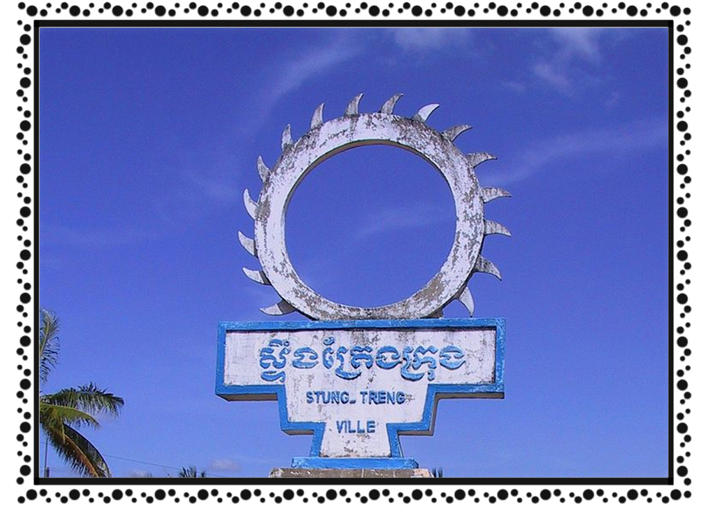

ខេត្ត និងក្រុងនៃព្រះរាជាណាចក្រកម្ពុជា
ភស្ទឹងត្រែង
 ខេត្តស្ទឹងត្រែង គឺជាខេត្តមួយនៅចុងខាងជើងនៃប្រទេសកម្ពុជា។ ឈ្មោះដើមហៅថា សុវណ៌្ណបុរ នៃដែនដីសុវណ៌្ណភូមិ កម្វុជទេឝ (ប្រាសាទបុរាណខ្មែរសាងច្រើនពីឥដ្ឋលាយថ្មភក់ ក្នុងសម័យហ្វូណន និងដើមសម័យចេនឡា) និងអាចតាមអ្នកស្រុកថា ឆ្ទិងតេង តាមភាសាសំស្ក្រឹត (ភាសាលាវថា សៀងតេង) ដែលមានព្រះសិវលិង្គរកឃើញចំនួន២គឺ វ្រះ ឝិវលិង្គ សុវណ៌្ណេឝ្វរ និងវ្រះឝិវលិង្គ សុវណ៌្ណលិង្គ និងមានទន្លេមេគង្គត្រូវហៅឈ្មោះដើមថា ទន្លេកម្វុជ / កម្ពុជា ហៅតាមសំស្ក្រឹតថា មហាតីថ៌ ហើយក្រុងស្ទឹងត្រែងត្រូវប្រសព្វទន្លេជាច្រើនខ្សែហៅថា តីថ៌ (តីថ៌ ត្រូវចាត់ជាទន្លេលាងបាប និងមានមន្តសិរីជ័យមង្គលដល់អ្នកស្រុក)។ ទីក្រុងរបស់ខេត្តស្ទឹងត្រែងមានឈ្មោះថា ទីក្រុងស្ទឹងត្រែង។ ខេត្តមួយនៃប្រទេសកម្ពុជានៅភាគឦសាន។ ដែលមានព្រំប្រទល់ជាប់ខេត្តរតនគិរីនៅខាងកើត ខេត្តមណ្ឌលគិរីនិងខេត្តក្រចេះនៅខាងត្បូង និងខេត្តកំពង់ធំនិងខេត្តព្រះវិហារ នៅខាងលិច ខេត្តនេះមានព្រំប្រទល់ខាងជើងជាប់នឹងព្រំដែនអន្តរជាតិឡាវ។ ក្នុងខេត្តនេះមានទន្លេមេគង្គហូរកាត់ខេត្ត។ ខេត្តនេះភាគច្រើនគ្របដណ្តប់ដោយព្រៃឈើ និងធនធានជលផលមានសភាពសម្បូរបែប។ខេត្តស្ទឹងត្រែង កាលពីដើមឡើយមានឈ្មោះថា "ទន្លេរពៅ" កំណើតខេត្តស្ទឹងត្រែងកើតឡើងដោយសារព្រះសង្ឈមួយអង្គ (ជានេនលាចាកសិក្ខាបទ) ព្រះនាម សៀង ប៉េង មកពីស្រុកវៀងច័ន្ទ បានលើកដែនសារទឹងទែងនេះថ្វាយមកព្រះករុណាក្រុងកម្ពុជា ។ ព្រះករុណាក្រុងកម្ពុជាទ្រង់ទទួលដង្វាយនេះ ហើយទ្រង់បានតែងតាំងលោក ប៉េង ជាចៅហ្វាយខេត្ត នៅក្នុងអំណាចព្រះចៅក្រុងកម្ពុជា ។ បន្ទាប់ពីត្រូវព្រះរាជាតែងតាំងជាចៅហ្វាយខេត្ត លោកឧកញ៉ា ប៉េង បាននាំសួយសារអារកទៅថ្វាយព្រះចៅក្រុងកម្ពុជាបានរយៈពេល៣ឆ្នាំ ទើបគិតដោះខ្លួនចេញពីអំណាចខ្មែរ ហើយបានរត់ចាកចោលដែនសារទឹងទែងទៅរស់នៅស្រុកវ៉ើនសៃវិញ ។ ក្រោយពីលោកឧកញ៉ា ប៉េង បានរត់ចាកចោលដែនសារទឹងទែង កូនប្រុសរបស់លោកឈ្មោះថា ជា ប៉េងញ៉ាសំ ក៏ត្រូវបានទទួលងារជាចៅហ្វាយខេត្តបន្តពីលោក។ ជា ប៉េងញ៉ាសំ បានរួមគំនិតឃុបឃិតជាមួយរាស្ត្រក្នុងខេត្តរបស់ខ្លួនចូលទៅជ្រកកោនក្រោមម្លប់ព្រះចៅនគរសៀម សៀមបានតែងតាំងងារ ជា ប៉េងញ៉ាសំ ទៅជាចៅមឿងសៀងទែង ។ ដូច្នេះឈ្មោះ សៀង ទែង ជាភាសាឡាវប្រែថា លោកនេនដែលលាចាកសិក្ខាបទបានកសាងឡើង ។ យូរមកប្រជាជនខ្មែរយើងហៅក្លាយនាម សៀង ទែងនោះទៅជា ឈ្មោះស្ទឹងត្រែងវិញ រហូតមកដល់បច្ចុប្បន្ន គឺមានន័យថា ស្រុកមានស្ទឹងដុះស្មៅត្រែង។